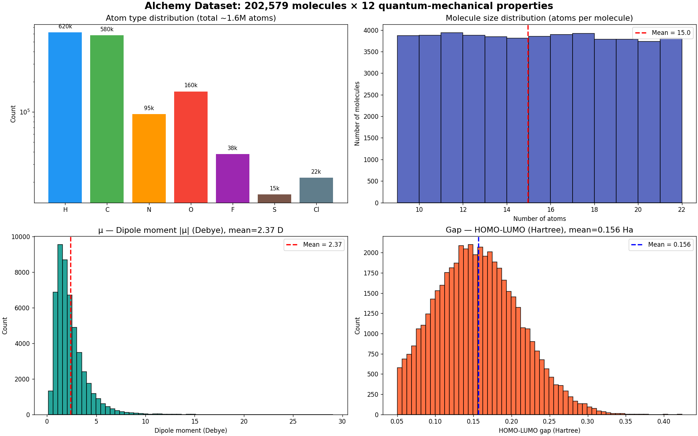
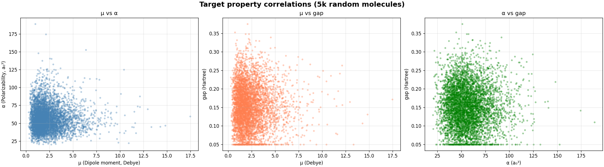
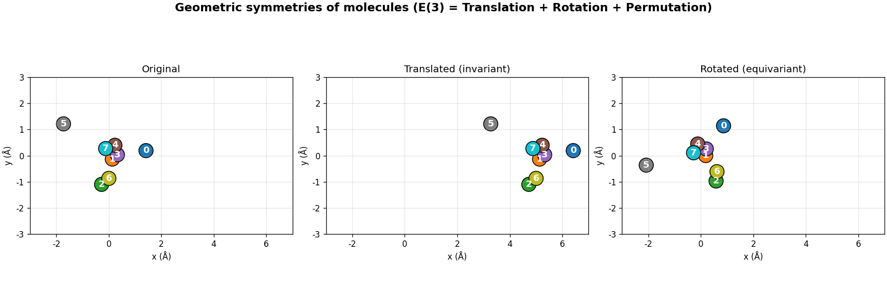
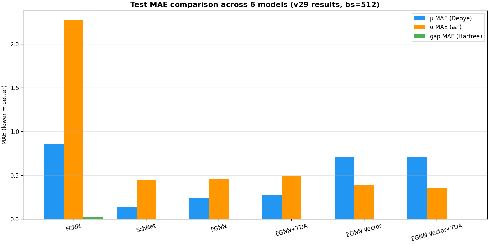
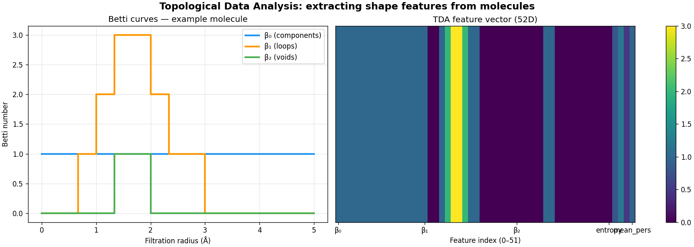

Предсказание квантово-механических свойств молекул с использованием геометрического глубокого обучения и топологического анализа данных
Alchemy v20191129 — это подмножество GDB-17 базы органических молекул, для которых вычислены DFT-свойства (B3LYP/6-31G(2df,p)).

3 таргета: μ (диполь, Дебай), α (поляризуемость, a₀³), gap (HOMO-LUMO, Хартри).
7 типов атомов: H, C, N, O, F, S, Cl. Молекулы содержат 9–29 атомов.
5,000 случайных молекул. Видна положительная корреляция μ ↔ α (более полярные молекулы более поляризуемы).

Gap слабо коррелирует с μ и α — это независимая электронная характеристика.
Физические свойства молекул не меняются при E(3)-преобразованиях:

EGNN встраивает эти симметрии в архитектуру — обучение быстрее и точнее, чем у обычных MLP.
| Модель | Эквивариантность | TDA | Описание |
|---|---|---|---|
| FCNN | нет | нет | Базовый MLP на дескрипторах |
| SchNet | translation + permutation | нет | Continuous filter convolutions |
| EGNN | E(3) | нет | E(3)-эквивариантная сеть |
| EGNN+TDA | E(3) | да | EGNN + топологические признаки |
| EGNN Vector | E(3) | нет | EGNN с векторным выходом μ |
| EGNN Vector+TDA | E(3) | да | EGNN Vector + TDA |

Извлечение инвариантных топологических признаков из 3D-структуры молекулы.
Итог: 52D вектор на молекулу, E(3)-инвариантный по построению.

Программа максимум: обратная задача — извлечь геометрические priors из TDA и рекомендовать оптимальную архитектуру.
Все три E(3) симметрии присутствуют → EGNN — правильный выбор.
checkpoints/<model>_all_best.pt — лучший чекпойнтresults/experiments/batch_size_512/history_*.csv — история по эпохамresults/experiments/batch_size_512/summary_*.csv — сводка метрикresults/experiments/batch_size_512/args_*.json — все гиперпараметрыresults/experiments/batch_size_512/target_stats_*.json — нормализацияresults/figures/*.png — графики обучения + parity plotsresults/robustness/*.csv — robustness evalresults/automl/recommendation.json — отчёт AutoML• github.com/ThomasMoore25/alchemy-geom-tda